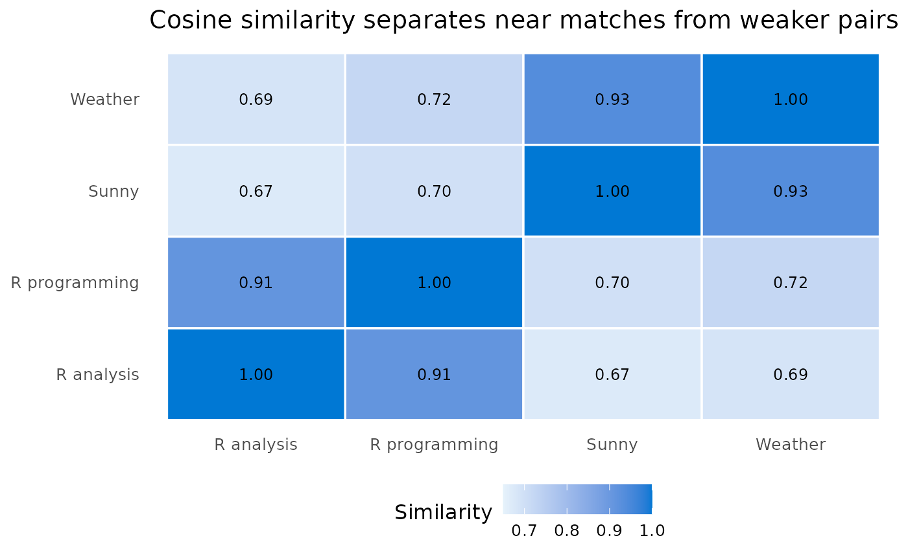
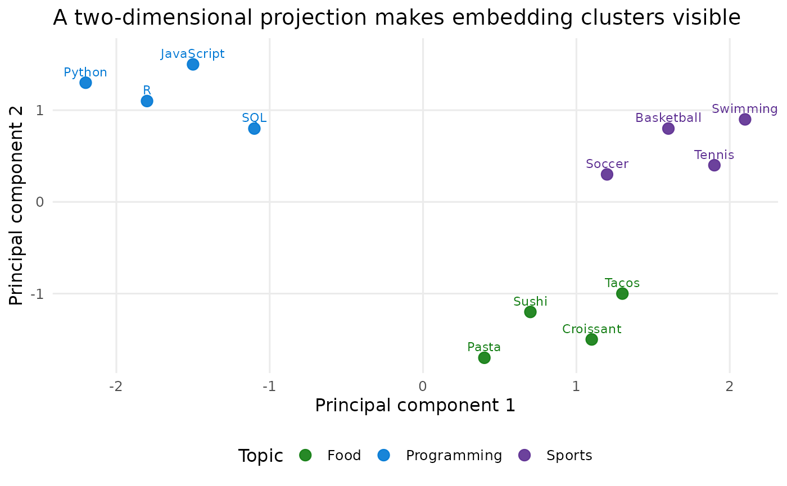

What embeddings are for
Embeddings are numerical representations of text that capture semantic meaning. When you convert text to an embedding, you get a vector of numbers (often 1,536 or 3,072 dimensions depending on the model). Texts with similar meanings tend to have similar vectors.
Use embeddings when you need to:
- Find documents related to a query by meaning, not only keywords.
- Measure how similar two pieces of text are.
- Cluster open-ended responses into themes.
- Find near-duplicate responses or records.
- Feed text-derived numeric predictors into downstream models.
Unlike keyword matching, embeddings understand that “automobile” and “car” are semantically similar, even though they share no letters.
Generating Embeddings with foundry_embed()
The foundry_embed() function converts text into
embedding vectors:
library(foundryR)
# Single text
embedding <- foundry_embed("Machine learning is transforming industries",
model = "my-embeddings")
embedding
#> # A tibble: 1 x 3
#> text embedding n_dims
#> <chr> <list> <int>
#> 1 Machine learning is transforming industries <dbl [1,536]> 1536The result is a tibble with:
-
text: The original input text -
embedding: A list-column containing the numeric vector -
n_dims: The dimensionality of the embedding
Embedding Multiple Texts
Pass a character vector to embed multiple texts in one call:
documents <- c(
"The quick brown fox jumps over the lazy dog",
"A fast auburn fox leaps above a sleepy canine",
"The stock market closed higher today",
"Financial markets saw gains in afternoon trading"
)
doc_embeddings <- foundry_embed(documents, model = "my-embeddings")
doc_embeddings
#> # A tibble: 4 x 3
#> text embedding n_dims
#> <chr> <list> <int>
#> 1 The quick brown fox jumps over the lazy dog <dbl [1,536]> 1536
#> 2 A fast auburn fox leaps above a sleepy canine <dbl [1,536]> 1536
#> 3 The stock market closed higher today <dbl [1,536]> 1536
#> 4 Financial markets saw gains in afternoon trading <dbl [1,536]> 1536Controlling Dimensions
Some embedding models (like text-embedding-3-small and
text-embedding-3-large) support reducing the output
dimensions. Smaller dimensions mean faster similarity computations and
less storage, with some trade-off in precision:
# Reduce to 256 dimensions (model must support this)
compact_embedding <- foundry_embed(
"Hello, world!",
model = "my-text-embedding-3-small",
dimensions = 256
)
compact_embedding$n_dims
#> [1] 256Computing Similarity with foundry_similarity()
Cosine similarity measures how similar two embeddings are, with
values ranging from -1 (opposite) to 1 (identical). The
foundry_similarity() function computes pairwise
similarities for all embeddings in a tibble:
texts <- c(
"I love programming in R",
"R is my favorite language for data analysis",
"The weather is nice today",
"It's sunny and warm outside"
)
embeddings <- foundry_embed(texts, model = "my-embeddings")
similarities <- foundry_similarity(embeddings)
similarities
#> # A tibble: 6 x 3
#> text_1 text_2 similarity
#> <chr> <chr> <dbl>
#> 1 The weather is nice today It's sunny and warm outside 0.934
#> 2 I love programming in R R is my favorite language for da... 0.912
#> 3 I love programming in R The weather is nice today 0.723
#> 4 I love programming in R It's sunny and warm outside 0.698
#> 5 R is my favorite language for data an... The weather is nice today 0.687
#> 6 R is my favorite language for data an... It's sunny and warm outside 0.672Results are sorted by similarity (highest first). Notice how texts about similar topics (R programming, weather) have higher similarity scores with each other.
The rendered outputs below use precomputed, illustrative data from a representative run. They are rendered during the documentation build without Azure credentials.

Use Case: Finding Similar Documents
A common application is finding documents most similar to a query. Here is how to implement a simple semantic search:
library(dplyr)
# Your document collection
documents <- c(
"How to install R packages using install.packages()",
"Data visualization with ggplot2 in R",
"Introduction to machine learning with Python",
"Statistical hypothesis testing explained",
"Building web applications with Shiny",
"Deep learning with TensorFlow and Keras"
)
# Embed all documents
doc_embeddings <- foundry_embed(documents, model = "my-embeddings")
# User query
query <- "How do I create charts and graphs in R?"
query_embedding <- foundry_embed(query, model = "my-embeddings")
# Compute similarity between query and each document
compute_similarity <- function(emb1, emb2) {
sum(emb1 * emb2) / (sqrt(sum(emb1^2)) * sqrt(sum(emb2^2)))
}
query_vec <- query_embedding$embedding[[1]]
results <- doc_embeddings %>%
mutate(
similarity = sapply(embedding, function(e) compute_similarity(query_vec, e))
) %>%
arrange(desc(similarity)) %>%
select(text, similarity)
# Top 3 most relevant documents
head(results, 3)
#> # A tibble: 3 x 2
#> text similarity
#> <chr> <dbl>
#> 1 Data visualization with ggplot2 in R 0.891
#> 2 How to install R packages using install.packages() 0.812
#> 3 Building web applications with Shiny 0.756| Nearest documents for a charting query | ||
| Rank | Document | Cosine similarity |
|---|---|---|
| 1 | Data visualization with ggplot2 in R | 0.891 |
| 2 | How to install R packages using install.packages() | 0.812 |
| 3 | Building web applications with Shiny | 0.756 |
Use Case: Clustering Text
Embeddings work well as features for clustering algorithms. Here is
an example using stats::kmeans() to group similar
texts:
library(dplyr)
# Sample texts to cluster
texts <- c(
# Tech/Programming cluster
"Python is great for machine learning",
"R excels at statistical analysis",
"JavaScript powers modern web applications",
"SQL is essential for database queries",
# Food cluster
"Italian pasta with tomato sauce",
"Sushi is a popular Japanese dish",
"French croissants are flaky and buttery",
"Mexican tacos with fresh salsa",
# Sports cluster
"Soccer is the world's most popular sport",
"Basketball requires speed and agility",
"Tennis matches can last for hours",
"Swimming is excellent cardiovascular exercise"
)
# Generate embeddings
embeddings <- foundry_embed(texts, model = "my-embeddings")
# Convert list-column to matrix for kmeans
embedding_matrix <- do.call(rbind, embeddings$embedding)
# Cluster into 3 groups
set.seed(42)
clusters <- kmeans(embedding_matrix, centers = 3, nstart = 10)
# Add cluster assignments to our data
results <- embeddings %>%
mutate(cluster = clusters$cluster) %>%
arrange(cluster) %>%
select(text, cluster)
results
#> # A tibble: 12 x 2
#> text cluster
#> <chr> <int>
#> 1 Python is great for machine learning 1
#> 2 R excels at statistical analysis 1
#> 3 JavaScript powers modern web applications 1
#> 4 SQL is essential for database queries 1
#> 5 Italian pasta with tomato sauce 2
#> 6 Sushi is a popular Japanese dish 2
#> 7 French croissants are flaky and buttery 2
#> 8 Mexican tacos with fresh salsa 2
#> 9 Soccer is the world's most popular sport 3
#> 10 Basketball requires speed and agility 3
#> 11 Tennis matches can last for hours 3
#> 12 Swimming is excellent cardiovascular exercise 3The algorithm successfully grouped texts by topic (programming, food, sports) without any labeled training data.

Tips for Working with Embeddings
Choosing a Model
Azure AI Foundry offers several embedding models:
| Model | Dimensions | Notes |
|---|---|---|
| text-embedding-ada-002 | 1,536 | Previous generation, widely used |
| text-embedding-3-small | 1,536 (configurable) | Newer, supports dimension reduction |
| text-embedding-3-large | 3,072 (configurable) | Highest quality, more expensive |
For most use cases, text-embedding-3-small offers a good
balance of quality and cost.
Dimension Trade-offs
Higher dimensions generally capture more nuance but:
- Require more storage space
- Take longer to compute similarities
- May not significantly improve results for simple tasks
Consider using reduced dimensions (256-512) for large-scale applications where speed matters more than precision.
Handling Large Document Collections
For large collections, consider:
- Batch processing: Embed documents in batches to avoid rate limits
- Caching: Store embeddings in a database rather than regenerating them
-
Approximate nearest neighbors: Use libraries like
RcppAnnoyfor faster similarity search on large datasets
# Example: Processing in batches
batch_embed <- function(texts, model, batch_size = 100) {
n_batches <- ceiling(length(texts) / batch_size)
results <- vector("list", n_batches)
for (i in seq_len(n_batches)) {
start_idx <- (i - 1) * batch_size + 1
end_idx <- min(i * batch_size, length(texts))
batch_texts <- texts[start_idx:end_idx]
results[[i]] <- foundry_embed(batch_texts, model = model)
# Brief pause to respect rate limits
Sys.sleep(0.5)
}
dplyr::bind_rows(results)
}Preprocessing Text
For best results:
- Remove excessive whitespace and special characters
- Consider whether to include or exclude punctuation based on your use case
- For long documents, embed meaningful chunks (paragraphs, sentences) rather than entire documents
- Normalize text (lowercase) if case distinctions are not important for your application